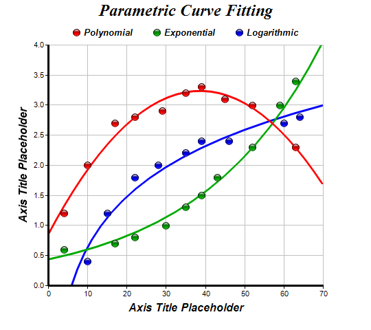

This example demonstrates parametric curve fitting.
In addition to linear regression, ChartDirector also supports polynomial, exponential and logarithmic regression. To create these curves, a
TrendLayer object is created using
XYChart.addTrendLayer, and the regressive type is set using
TrendLayer.setRegressionType.
The following is the command line version of the code in "cppdemo/paramcurve". The MFC version of the code is in "mfcdemo/mfcdemo". The Qt Widgets version of the code is in "qtdemo/qtdemo". The QML/Qt Quick version of the code is in "qmldemo/qmldemo".
#include "chartdir.h"
int main(int argc, char *argv[])
{
// The XY data of the first data series
double dataX0[] = {10, 35, 17, 4, 22, 29, 45, 52, 63, 39};
const int dataX0_size = (int)(sizeof(dataX0)/sizeof(*dataX0));
double dataY0[] = {2.0, 3.2, 2.7, 1.2, 2.8, 2.9, 3.1, 3.0, 2.3, 3.3};
const int dataY0_size = (int)(sizeof(dataY0)/sizeof(*dataY0));
// The XY data of the second data series
double dataX1[] = {30, 35, 17, 4, 22, 59, 43, 52, 63, 39};
const int dataX1_size = (int)(sizeof(dataX1)/sizeof(*dataX1));
double dataY1[] = {1.0, 1.3, 0.7, 0.6, 0.8, 3.0, 1.8, 2.3, 3.4, 1.5};
const int dataY1_size = (int)(sizeof(dataY1)/sizeof(*dataY1));
// The XY data of the third data series
double dataX2[] = {28, 35, 15, 10, 22, 60, 46, 64, 39};
const int dataX2_size = (int)(sizeof(dataX2)/sizeof(*dataX2));
double dataY2[] = {2.0, 2.2, 1.2, 0.4, 1.8, 2.7, 2.4, 2.8, 2.4};
const int dataY2_size = (int)(sizeof(dataY2)/sizeof(*dataY2));
// Create a XYChart object of size 540 x 480 pixels
XYChart* c = new XYChart(540, 480);
// Set the plotarea at (70, 65) and of size 400 x 350 pixels, with white background and a light
// grey border (0xc0c0c0). Turn on both horizontal and vertical grid lines with light grey color
// (0xc0c0c0)
c->setPlotArea(70, 65, 400, 350, 0xffffff, -1, 0xc0c0c0, 0xc0c0c0, -1);
// Add a legend box with the top center point anchored at (270, 30). Use horizontal layout. Use
// 10pt Arial Bold Italic font. Set the background and border color to Transparent.
LegendBox* legendBox = c->addLegend(270, 30, false, "Arial Bold Italic", 10);
legendBox->setAlignment(Chart::TopCenter);
legendBox->setBackground(Chart::Transparent, Chart::Transparent);
// Add a title to the chart using 18 point Times Bold Itatic font.
c->addTitle("Parametric Curve Fitting", "Times New Roman Bold Italic", 18);
// Add titles to the axes using 12pt Arial Bold Italic font
c->yAxis()->setTitle("Axis Title Placeholder", "Arial Bold Italic", 12);
c->xAxis()->setTitle("Axis Title Placeholder", "Arial Bold Italic", 12);
// Set the axes line width to 3 pixels
c->yAxis()->setWidth(3);
c->xAxis()->setWidth(3);
// Add a scatter layer using (dataX0, dataY0)
c->addScatterLayer(DoubleArray(dataX0, dataX0_size), DoubleArray(dataY0, dataY0_size),
"Polynomial", Chart::GlassSphere2Shape, 11, 0xff0000);
// Add a degree 2 polynomial trend line layer for (dataX0, dataY0)
TrendLayer* trend0 = c->addTrendLayer(DoubleArray(dataX0, dataX0_size), DoubleArray(dataY0,
dataY0_size), 0xff0000);
trend0->setLineWidth(3);
trend0->setRegressionType(Chart::PolynomialRegression(2));
// Add a scatter layer for (dataX1, dataY1)
c->addScatterLayer(DoubleArray(dataX1, dataX1_size), DoubleArray(dataY1, dataY1_size),
"Exponential", Chart::GlassSphere2Shape, 11, 0x00aa00);
// Add an exponential trend line layer for (dataX1, dataY1)
TrendLayer* trend1 = c->addTrendLayer(DoubleArray(dataX1, dataX1_size), DoubleArray(dataY1,
dataY1_size), 0x00aa00);
trend1->setLineWidth(3);
trend1->setRegressionType(Chart::ExponentialRegression);
// Add a scatter layer using (dataX2, dataY2)
c->addScatterLayer(DoubleArray(dataX2, dataX2_size), DoubleArray(dataY2, dataY2_size),
"Logarithmic", Chart::GlassSphere2Shape, 11, 0x0000ff);
// Add a logarithmic trend line layer for (dataX2, dataY2)
TrendLayer* trend2 = c->addTrendLayer(DoubleArray(dataX2, dataX2_size), DoubleArray(dataY2,
dataY2_size), 0x0000ff);
trend2->setLineWidth(3);
trend2->setRegressionType(Chart::LogarithmicRegression);
// Output the chart
c->makeChart("paramcurve.png");
//free up resources
delete c;
return 0;
}
© 2023 Advanced Software Engineering Limited. All rights reserved.